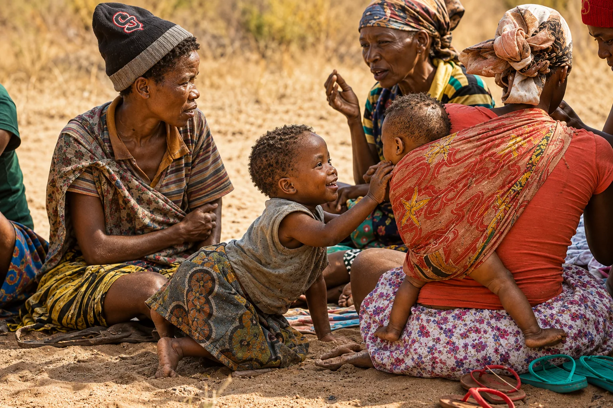
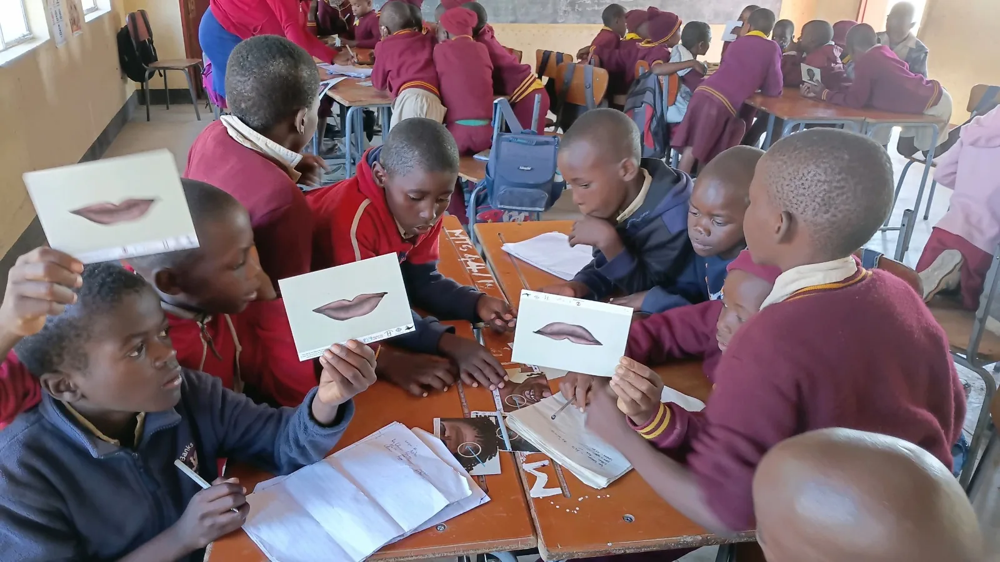
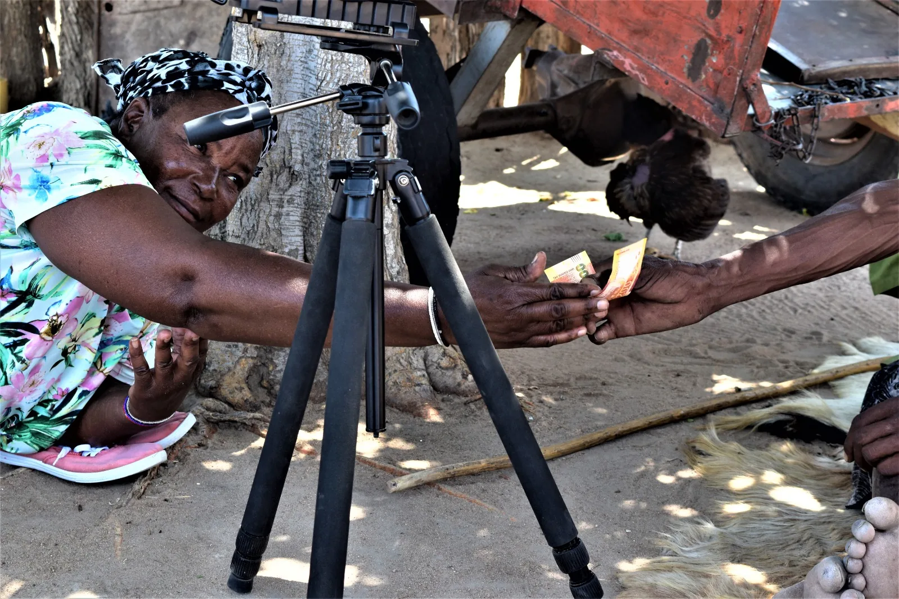
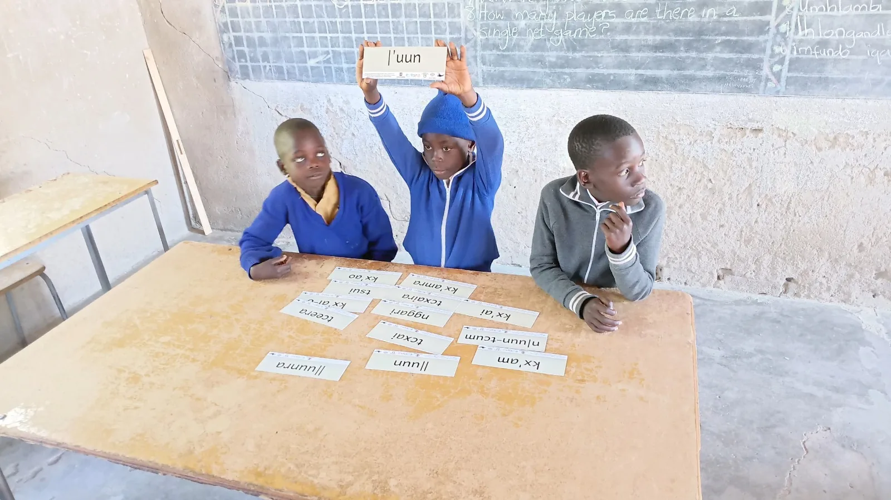
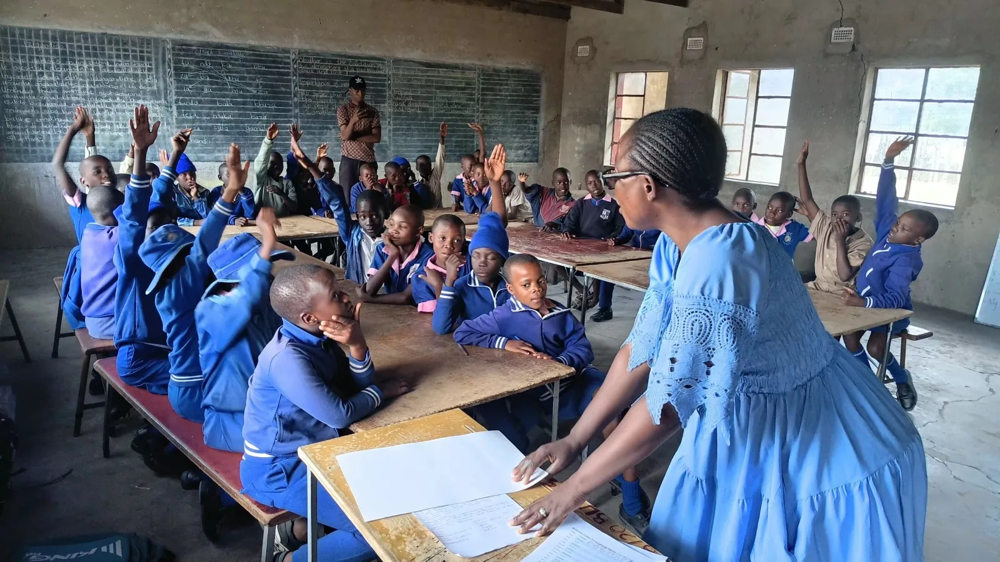
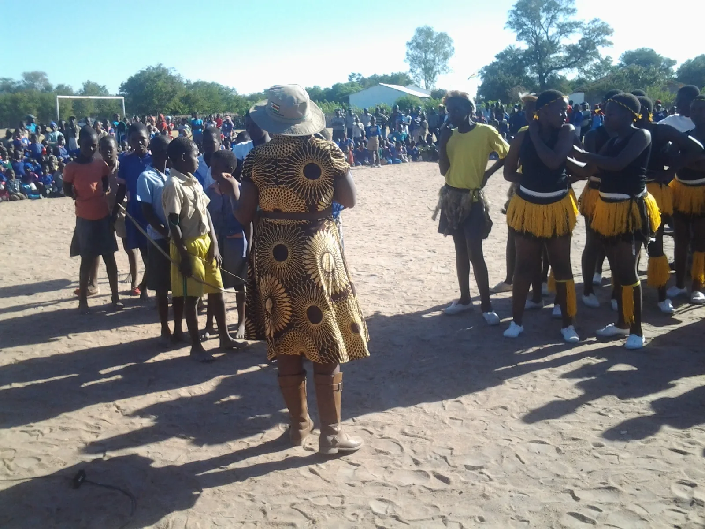
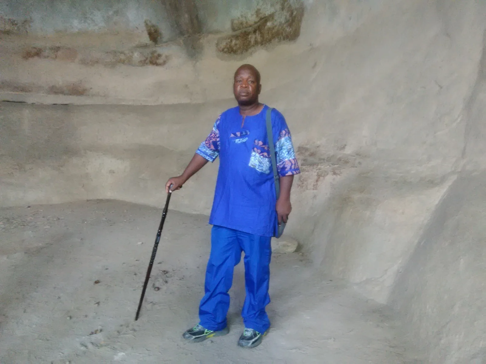
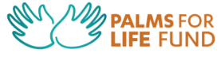
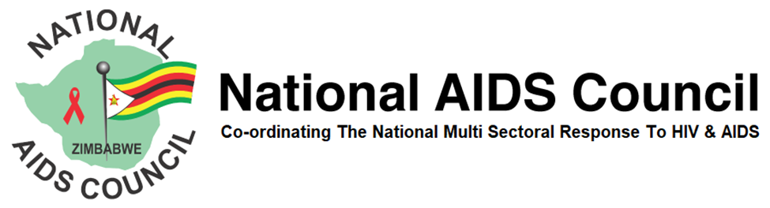

01 · Heritage
Language lives in community
Language is carried through relationships, stories, everyday life and knowledge shared between generations.
Toa ta na hae. Ti cune Davi.be, tire Tjwa, ti kua Tjwao dam k'ui. Ti kua karise toa aiboka hi hua hha
(Good day, my name is Davy, I'm Tjwa, I speak Tjwao. I would like to welcome you to our site.)

Tsoro-o-tso San Development Trust works alongside communities to preserve, document and promote Tjwao language, San cultural heritage, education and local knowledge.
The Trust brings community experience, language work, cultural research and education together. The emphasis is on practical, respectful work that keeps knowledge connected to the people who hold it and creates pathways for younger generations to learn.
Preserving Tjwao also means protecting stories, identity, ecological knowledge, memory and the cultural connections carried through generations.
Language is carried through relationships, stories, everyday life and knowledge shared between generations.

Children engage directly with words, sounds and learning materials in collaborative classroom activities.

Research and documentation are grounded in direct engagement with people, place and lived experience.
Our work combines education, documentation, research and community participation, with community participation strengthened through support from Palms For Life Fund.

Hands-on language activities and learning materials that support children and community transmission.

Learning through participation, discussion and direct engagement with people and local knowledge.

Language, culture and identity remain connected through community gatherings, performance and shared memory.
The pilot Tjwao language program is designed to create structured learning opportunities for children while drawing on community knowledge and aligning with education priorities. This initiative is supported with financial assistance from Palms For Life Fund.
The program responds to language decline caused by displacement, marginalisation, limited institutional support and the dominance of Ndebele, English and Shona.
It places language learning alongside community knowledge, research and cultural transmission, creating practical opportunities for knowledge to move from one generation to the next.

Mr. Davy Ndlovu is the founder and current Director of TSDT. He is a minority languages and cultural researcher with 13 years’ experience as a contemporary historian. He has documented, compiled and published several articles and books on the Tjwao language and culture and has collaborated with international, regional and local development and research institutions.
A visual record of language learning, classroom activities, research, community conversations, cultural heritage and wider engagement.
TSDT works with sponsors, communities and education partners to preserve Tjwao, strengthen learning opportunities and support the wellbeing of children and families.

Tsoro-o-Tso San Development Trust (TSDT) is grateful for the support of Palms For Life Fund (PFL), which is currently supporting the Tjwao Language Learning Pilot Project, an important initiative aimed at revitalising the endangered Tjwao language.
This support has breathed new life into the Tjwao Language Revitalisation Programme. Through the pilot, 110 learners from two schools in Tsholotsho — Mtshina Primary School and Butabubili Primary School — are enrolled in the Tjwao language learning programme.
Learning materials have been developed with assistance from Tjwao Language, contributing to the development of structured resources for teaching and learning Tjwao.
The project is implemented through collaboration between the Ministry of Primary and Secondary Education's Curriculum Development Unit, Tsoro-o-Tso San Development Trust and Palms For Life Fund.
TSDT sincerely appreciates PFL's commitment to supporting the preservation and revitalisation of Tjwao and helping ensure that future generations have an opportunity to learn, speak and celebrate their language and cultural identity.

Tsoro-o-Tso San Development Trust (TSDT) is also implementing the Brotha2Brotha Programme in partnership with the National AIDS Council of Zimbabwe (NAC).
Brotha2Brotha is a community-based, evidence-informed behaviour change intervention targeting adolescent boys and young men (ABYM) aged 16–24, a priority population at increased risk of HIV acquisition.
The programme contributes directly to the UNAIDS 95-95-95 targets and the goal of ending AIDS as a public health threat by 2030 by addressing structural and behavioural drivers of new infections.
Implemented through a sports-centred mentorship model, Brotha2Brotha creates safe spaces where adolescent boys and young men receive:
Through this partnership, TSDT and the National AIDS Council are working to empower young men with knowledge, positive values and practical tools to make informed decisions and contribute to healthier communities.
Tsoro-o-Tso San Development Trust (TSDT) works with Minority Rights Group (MRG) through the Indigenous Peoples' Collective Action & Networking (MIPCAN) project.
MRG supports TSDT to implement inclusive and multi-stakeholder programmes in Zimbabwe to ensure that San/Tjwa communities are not left behind.
The partnership also encourages the Government of Zimbabwe to honour its obligations under the United Nations Declaration on the Rights of Indigenous Peoples, adopted by the United Nations General Assembly in 2007, and, where applicable, commitments relating to Indigenous Peoples' rights, child welfare and violence against Indigenous women and girls.
Document, protect and promote an endangered indigenous language and the knowledge carried through it.
Create language-learning resources that help children engage with Tjwao in structured, accessible ways.
Support the Tjwao language teaching pilot and after-school learning opportunities for children.
Help improve school environments so learners have safer, more supportive places to learn.
Help children access school uniforms and participate in learning with dignity.
Contribute to school-feeding support that helps learners attend and take part in school activities.
Tjwao is an indigenous language spoken by the Tjwao (San) people in Tsholotsho district of Matabeleland North and Plumtree district of Matabeleland South. It is classified as critically endangered, with fluency now confined to a small number of elderly speakers.
The decline of the language puts oral traditions, ecological knowledge and cultural identity at risk. Tjwao has not been systematically incorporated into formal education, leaving it vulnerable to further loss amid displacement, marginalisation, limited institutional support and the dominance of Ndebele, English and Shona.
This pilot seeks to create structured after-school learning opportunities for children, drawing on community knowledge while aligning with Ministry of Education priorities. Ministry officials have expressed commitment to supporting the initiative through approval letters, guidance and monitoring to ensure compliance with education protocols.
Aligned with the spirit of UNESCO’s International Decade of Indigenous Languages (2022–2032), the initiative aims to revive, preserve and promote Tjwao through community-led education, cultural pride and the transmission of language to younger generations.
Long-term progress depends on community knowledge holders, educators, researchers, development organisations and partners working together with respect for Tjwao people and culture.
Whether you are a researcher, educator, development partner, community member or supporter, we welcome conversations that can strengthen language preservation and cultural heritage work.